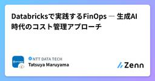

NTT DATA TECHのフィード
https://zenn.dev/p/nttdata_tech
NTT DATA公式アカウントです。 技術を愛するNTT DATAの技術者が、気軽に楽しく発信していきます。 当社のサービスなどについてのお問い合わせは、 お問い合わせフォーム https://nttdata.com/jp/ja/contact-us/ へお願いします。
フィード

AWS Summit Japan 2026 : 新入社員が参加してみた感想
NTT DATA TECHのフィード
はじめにこんにちは、2026年4月入社の新人エンジニア、taigaです。AWS Summit Japan 2026に参加してきました。新入社員ということもあり、AWSについては研修で少し学んだだけでしたが、せっかく参加するなら最低限の知識を持って臨みたいと考え、事前に AWS Certified AI Practitioner を取得しました。本記事では、そんなAWS初心者の目線で、印象に残ったセッションや展示、会場で感じたAI活用の広がりについて紹介します。 全体の所感：AIは前提、加えてPhysical AIが流行いろんなブースを回っていてAIが使われているシステ...
17時間前

SAPBDCナレッジ集：SAP Analytics Cloud「Just Ask」を試してみた
NTT DATA TECHのフィード
SAP Analytics Cloud「Just Ask」を試してみた 〜自然言語でBI分析はどこまで実用的か〜 はじめにBIツールを導入しても、「作られたレポートしか見られない」「欲しい情報を得るたびに分析担当へ依頼が必要」「結局Excelへ出力して加工している」といった課題は少なくありません。SAP Analytics Cloud（SAC）には、自然言語で質問するとグラフを自動生成する「Just Ask」機能があります。今回は、この機能を実際の業務データを想定したモデルで検証し、どの程度自然言語で分析できるのか日本語利用時にどのような工夫が必要か...
19時間前

【シリーズまとめ】COBOL現新移行検証で見えた非互換の構造
NTT DATA TECHのフィード
COBOL現新移行検証シリーズ まとめ本シリーズは、ホスト系COBOL処理系からオープン系COBOL処理系への移行に携わる実務者を対象に、差異の構造と実機検証の設計思想を体系的に整理したものです。コンパイルエラーの有無ではなく、「動作が一致しているか」という観点から移行品質を捉え直すことを目的としました。 各回一覧 第1回【COBOL現新移行検証①】マニュアルに書いていない非互換とどう向き合うかhttps://zenn.dev/nttdata_tech/articles/f0610fa39d5bb8 第2回【COBOL現新移行検証②】実機検証の設計思想と検...
2日前

SAP BDCナレッジ集：SAP DatasphereのDACによる行レベルセキュリティ設計方針
NTT DATA TECHのフィード
はじめにSAP Datasphereでは、データアクセスコントロール（DAC: Data Access Control）を使うことで、ログインユーザに応じた行レベルセキュリティを設定できます。例えば、同じ売上レポートでも、関東担当のユーザには関東地域の売上のみ、東北担当のユーザには東北地域の売上のみを表示するといった制御ができます。DAC自体の設定手順は、大きく見るとそれほど複雑ではありません。権限ビューを作成するDACオブジェクトを作成するDACをビューまたはモデルに適用する設定手順一方で、実案件で迷いやすいのは設定手順そのものよりも、権限ビュー、DACオブジ...
3日前

SAP BDCナレッジ集：業務部門でのSAP Analytics Cloud活用
NTT DATA TECHのフィード
はじめにSAP Analytics Cloud（SAC）は、データの可視化、分析、レポート作成を行うためのクラウド型分析ツールです。SACというと、BIツールとしての機能やSAP製品との連携に注目されることが多いですが、実際の活用を考えるうえでは、業務部門でどのように活用できるのかという観点も重要です。日々の業務では、売上や予算の状況を確認したり、会議用の資料を作成したり、関係者に分析結果を共有したりする場面があります。そのたびにIT部門へレポート作成を依頼するのではなく、業務部門側で必要な情報を確認し、状況に応じて見方を変えられると、意思決定のスピードを上げやすくなります。...
3日前

AWS資格全冠への道 1
1
NTT DATA TECHのフィード
～試験合格のための勉強方法～2026年6月26日 株式会社NTTデータ 第三公共事業本部 小沼真実この記事は、2026年6月までに Amazon Web Services（AWS） の認定資格を現在廃止済みの MLS-C01 を含む計 13 個を取得（全冠）したため、その経験をもとに、自分に効果があった勉強方法や利用した勉強コンテンツ、問題解答時のコツなどについて、解説しています。クラウド関連の資格取得のために勉強中の方や、これから始めようとしている方など、自分に合った勉強方法を見つけるのに参考にしてもらえたらと思い、今回学習メモとして、AWS を中心に整理しました。この記事...
7日前

Databricks Unity AI Gateway最新アップデート：AIガバナンス強化の主要ポイント
NTT DATA TECHのフィード
はじめにデータマネジメントPF統括部の平尾です。Databricksのエバンジェリスト認定資格であるDatabricks Championとしても活動しています。今回はDatabricks Data + AI Summit 2026（DAIS2026）で発表されたUnity AI Gatewayのアップデートについて、主要ポイントに絞ってご紹介します。 Unity AI GatewayとはUnity AI GatewayはDatabricksの中央AIガバナンスレイヤーであり、エージェント、ツール、モデル、Model Context Protocol（MCP）を含むAIア...
7日前

Databricksで実践するFinOps ― 生成AI時代のコスト管理アプローチ
NTT DATA TECHのフィード
はじめにこんにちは、データエンジニアをしているMaruです。Databricksの年次カンファレンス「Databricks Data + AI Summit 2026」に参加してきました！Databricksの勢いを改めて肌で感じるとともに、自身にとっても学びのあるセッションが数多くありました。本記事ではその中から、生成AIやAIエージェントの活用が広がる中で重要性が増しているコスト管理をテーマにした、「What’s New for FinOps on Databricks」というセッションについてレポートします。 本記事の対象者Databricksを利用しており、コ...
8日前

OpenSharingとは何か？ Data + AI Summit 2026で発表されたデータとAI資産を共有する新しい仕組み
NTT DATA TECHのフィード
はじめにNTTデータ データマネジメントPF統括部の青木です。先日、サンフランシスコで開催されたDatabricksの年次カンファレンス「Data + AI Summit 2026」に現地参加しました。今回のカンファレンスで注目を集めた機能の一つが 「OpenSharing」 です。発表自体はカンファレンス直前に行われましたが、Keynoteでも取り上げられ、Databricksが目指すAI時代のデータ・AI基盤を支える重要な機能として紹介されていました。https://www.databricks.com/company/newsroom/press-releases/dat...
9日前
AIエージェント時代の次世代データ・AI運用『Genie ZeroOps』入門⚙
NTT DATA TECHのフィード
はじめにNTTデータDatabricksビジネス推進室の中川です。先日サンフランシスコで開催されたDatabricksの年次カンファレンス「Data + AI Summit 2026」において、データ・AIプラットフォームの運用負荷を低減する新機能『Genie ZeroOps』が発表されました。https://www.databricks.com/blog/introducing-genie-zeroops本記事では、Bilal Aslam氏によるData + AI SummitのKeynoteを振り返りつつ、Genie ZeroOpsの概要や仕組みについて整理したいと思います...
9日前
なぜ LLM に大喜利が難しいのか
NTT DATA TECHのフィード
最初はちょっとした好奇心のつもりだったChatGPT や Claude の笑いのセンスは、ぼくとは合わない気がする。特に Claude とは、普段は友達のように分かり合えているのに、大喜利では全然分かり合えない。けれど本当はできるはずなんだ。そういう素朴な気持ちから全ては始まった。当時は、 Claude の Agent skills が無茶苦茶盛り上がっていた。 Skills を作れば、 Claude は何の専門家にでもなれる。それなら大喜利のプロにだってなれるはずだ。 Chain of Thought (CoT) の魔法LLM に大喜利がうまくできなかった理由は、ぼくには...
10日前
Data + AI Summit 2026セッションレポート（iceberg v4.0/Delta v5.0の話）
NTT DATA TECHのフィード
１．はじめに金融イノベーション本部の神田です。先日サンフランシスコで開催されたDatabricksの年次カンファレンス「Data + AI Summit 2026」に参加しました。オープンテーブルフォーマット（以下OTFと記載）のApache Iceberg（以下、Iceberg）およびDelta Lake（以下、Delta）のバージョンアップに関するセッションに参加しましたので、そのレポートをさせていただきます。＜参加したセッション＞https://www.databricks.com/dataaisummit/session/delta-iceberg-better-to...
10日前
Databricksが発表したOLAP×OLTP両刀⚔️の次世代DBアーキテクチャ「LTAP」を深堀る！
NTT DATA TECHのフィード
はじめに株式会社NTTデータ所属、Databricksビジネス推進室の井能です。Databricks Solutions Architect Championとしても活動しています。現在サンフランシスコで開催され、私も現地参加している『Data+AI Summit 2026』にて、従来の常識を覆す全く新しいアーキテクチャのデータベース『LTAP』が発表されました！キーノートより：LTAP（Lake Transactional/Analytical Processing）LTAPは、DatabricksにおけるOLAP機能であるLakehouseと、OLTP機能であるLak...
11日前
Agent Bricksが進化！Databricks Sandbox・Omnigent・Agent Memoryを早速試してみた💨
NTT DATA TECHのフィード
はじめにこんにちは、Databricksビジネス推進室の澁谷です。DatabricksのAgent Bricksは、2025年に登場した、企業データに基づく高品質なAIエージェントを簡単に構築することができる機能です。2026年6月15-18日に行われた、Databricksの年次カンファレンス「Data + AI Summit 2026」にて、このAgent Bricksの機能がさらに大きく拡張されることが発表されました！出典：Data + AI Summit 2026 Keynote Day2 Live配信の画面キャプチャ特筆すべきは、「Agent Bricks po...
11日前
AWS DevOps Agentの調査自動化と、OTelDemoに適用して根因分析性能を検証してみた
NTT DATA TECHのフィード
1. はじめにはじめまして、NTTデータ所属の渡邊と申します。昨今、運用負荷軽減のためAI Agentの導入を検討・実施しているケースが増加しており、特にAWS上で動作するシステムにおいて、2026年3月末にGAしたAWS DevOps Agent[1]は導入の容易さから有力な選択肢になります。本記事では実際の構築負荷と、実用的な根因分析性能があるかを検証しました。 2. 概要CloudWatch Alarm発報からDevOps Agentによる自動調査が開始される環境を構築し、構築負荷がどの程度か確かめてみました。結論としては監視の仕組みが既にある場合、DevOps ...
11日前
ローカルRAG環境 + 意味検索によるAI力の強化
NTT DATA TECHのフィード
はじめにLLM+RAG。とても効果的な仕組みだと思われるかと思います。ただ、RAGのデータは私が個別に対応しているタスクのことを知らないし、過去やってきたことも知りません。なので自分専用のRAGを構築したんですが、思ったより使い勝手が良かったので、同じような状況の人の参考になればと思い、手順/効果をまとめてみました！ご紹介する環境では VS Code（Copilot Chat）にローカルRAGを繋ぎ、Confluence やローカル環境のファイルを検索して回答に活用させています。またRAGのソースにはベクターDB（Chroma）を使っているので、単純に Markdown を...
11日前
データ移行で汚染データを見つけた場合どうするかを考えてみる
NTT DATA TECHのフィード
はじめに2026年4月にInformatica Intelligent Data Management Cloud (IDMC)のメジャーリリースがありましたね。CLAIRE GPTの機能拡張をはじめ盛りだくさんな内容で、こうしたアップデートの恩恵を速やかに受けられるのは、SaaSサービスならではというところでしょうか。前置きはさておき、今回は以前の記事でも少し触れたデータ移行で、汚染データを見つけた場合について書いてみようかと思います。 堅苦しいですが前提データ移行を行う時に、移行元のデータをさっと吸い上げて、さっと移行できると良いのですが、移行するタイミング（業務フロ...
14日前
SAP BDCナレッジ集：BDC利用準備段階での原因不明エラーに対する現場的アプローチ検証
NTT DATA TECHのフィード
自己紹介2000年代後半からSAPベーシス、2025年からSAP BDCとJouleを専門に働いています。今でもSAPGUIでワークロード分析とかやってます。JouleとかBDCとか、新しいことが大好きですが、古いことも大好きです。 はじめに「SAP BDCでのTDDライセンスって、どこまで使えるのか？」この問いにちゃんと答えるために、まずは検証環境を作るところから始めました。……が、結論から言うと BDCに入る前にハマってしまいました。内容としては難しいことではないですが、SAP Helpを読むだけだと同じ落とし穴にはまる人もでてくると思うので、せっかくなので投稿...
16日前
Databricks発OSSのメタハーネス『Omnigent』を触ってみた！🪸⭐
NTT DATA TECHのフィード
はじめにこんにちは、Databricksビジネス推進室の澁谷です。Databricksのブログで紹介されていたOSS「Omnigent」が気になったので、実際にローカル環境で触ってみました。https://www.databricks.com/jp/blog/introducing-omnigent-meta-harness-combine-control-and-share-your-agentsOmnigentは、Claude Code、Codex、自作エージェントなど、複数のAIエージェントをまとめて扱うための「メタハーネス」です。要するに、既存のハーネスやモデルで動...
16日前
Informatica IDMC CDIRの概要とサンプル実行
NTT DATA TECHのフィード
1. はじめに本記事では、Informatica（インフォマティカ） のクラウドデータマネジメントプラットフォーム「Intelligent Data Management Cloud」（IDMC ※旧称はIICS）のデータ取り込みソリューションであるCloud Data Ingestion and Replication (CDIR)の概要・利用シーンについて、筆者の理解をもとに整理しようと思います。近年、AI活用やデータドリブンな意思決定の重要性が説かれるなかで、まずは早く・簡単にデータを蓄積・集約し、分析やAI活用につなげたいというニーズが高まっているのではないでしょうか。一...
17日前